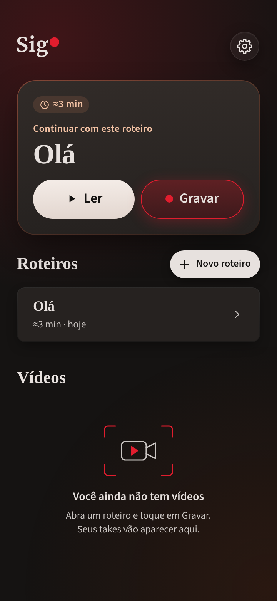
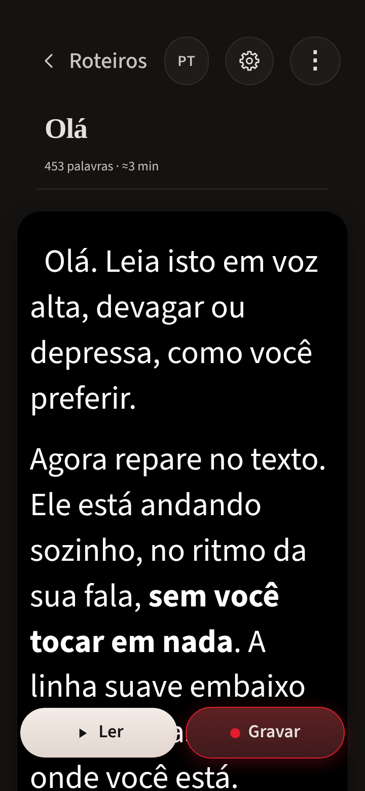
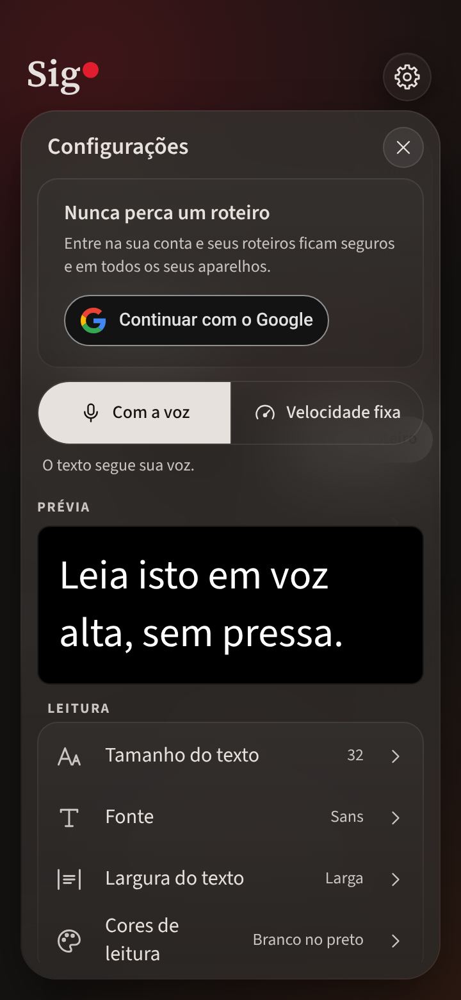
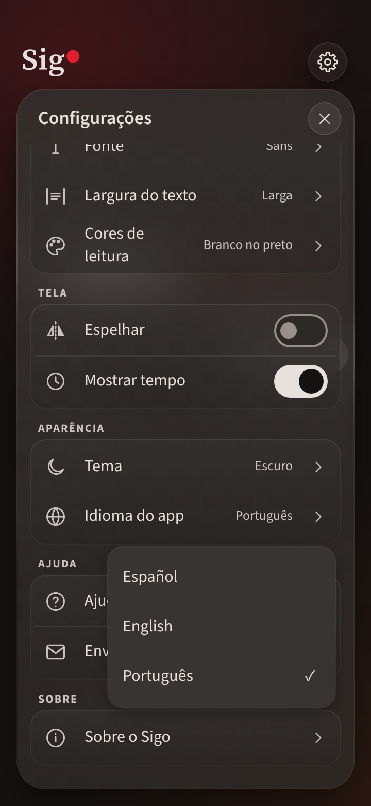
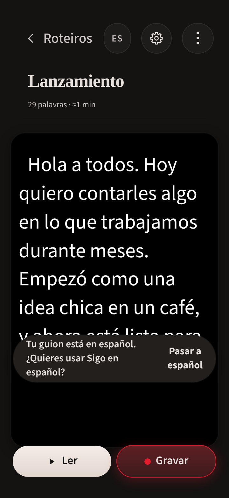

La app en portugués de Brasil · tema oscuro

1. Roteiros, con el Olá de la primera apertura.

2. El Olá en el editor, con sus formatos.

3. Configurações. «Cores de leitura» va en dos líneas; no se acortó.

4. Idioma do app: Español, English, Português.

5. Guion en español con la app en portugués: el aviso sale en español.